本文将逐步介绍构成现代高吞吐LLM（大语言模型）推理系统的所有核心系统组件与高级特性，并重点剖析vLLM [1]的工作原理。
本系列文章首篇，采用倒金字塔结构，先宏观概述再层层深入细节，助您构建对整个系统的准确高层心智模型，避免陷入细枝末节。
后续文章将深入探讨各子系统。
本文分为五个部分：
· LLM引擎与引擎核心：vLLM基础（调度、分页注意力、连续批处理等）
· 高级特性：分块预填充、前缀缓存、引导与推测解码、P/D分离
· 扩展：从单GPU到多GPU执行
· 服务层：分布式/并发Web脚手架
· 基准测试与自动调优：测量延迟与吞吐
· 分析基于提交42172ad（2025年8月9日）。
· 目标读者：对最先进LLM（大语言模型）引擎工作原理感兴趣的人，以及有意为vLLM、SGLang等项目贡献代码的人。
· 我将重点介绍V1引擎。我也探索了V0（现已弃用），这对理解项目演进过程很有价值，且许多概念仍然适用。
· 关于LLM引擎/引擎核心的第一部分可能略显冗长枯燥：但博客其余部分包含大量示例和图示。:)
LLM引擎是vLLM的基础构建模块。它本身已能实现高吞吐推理：但仅限于离线场景。目前还无法通过网络向客户提供服务。
我们将以下离线推理代码片段作为运行示例（改编自basic.py）。
from vllm import LLM, SamplingParams
prompts = [
"Hello, my name is",
"The president of the United States is",
]
sampling_params = SamplingParams(temperature=0.8, top_p=0.95)
def main():
llm = LLM(model="TinyLlama/TinyLlama-1.1B-Chat-v1.0")
outputs = llm.generate(prompts, sampling_params)
if __name__ == "__main__":
main()· VLLM_USE_V1="1" # 我们正在使用引擎V1
· VLLM_ENABLE_V1_MULTIPROCESSING="0" # 我们在单进程中运行
此配置为：
· 离线（无网络/分布式系统脚手架）
· 同步（所有执行都在单个阻塞进程中完成）
· 单GPU（无数据/模型/流水线/专家并行；DP/TP/PP/EP = 1）
· 使用标准Transformer [2]（支持像Jamba这样的混合模型需要更复杂的混合KV缓存内存分配器）
从这里开始，我们将逐步构建一个在线、异步、多GPU、多节点的推理系统：但仍服务于标准Transformer。
在此示例中，我们执行两项操作：
· 实例化一个引擎
· 对其调用generate以从给定提示中采样
让我们开始分析构造函数。
引擎的主要组件包括：
· vLLM配置（包含配置模型、缓存、并行性等的所有旋钮）
· 处理器（通过验证、分词和处理将原始输入转换为EngineCoreRequests）
· 引擎核心客户端（在我们的运行示例中，我们使用的是InprocClient，它基本上等同于EngineCore；我们将逐步构建到DPLBAsyncMPClient，以支持大规模服务）
· 输出处理器（将原始EngineCoreOutputs转换为用户可见的RequestOutput）
引擎核心本身由几个子组件组成：
· 模型执行器（驱动模型上的前向传播，我们目前处理的是UniProcExecutor，它在单个GPU上有一个Worker进程）。我们将逐步构建到支持多个GPU的MultiProcExecutor
· 结构化输出管理器（用于引导解码：我们稍后会介绍）
· 调度器（决定哪些请求进入下一个引擎步骤）：它还包含：策略设置：可以是FCFS（先来先服务）或优先级（高优先级请求先被服务）等待和运行队列KV缓存管理器：分页注意力 [3] 的核心
KV缓存管理器维护一个free_block_queue：一个可用的KV缓存块池（通常有数十万个，取决于VRAM大小和块大小）。在分页注意力期间，这些块作为索引结构，将token映射到它们计算出的KV缓存块。
在模型执行器构建期间，会创建一个Worker对象，并执行三个关键过程。（稍后，使用MultiProcExecutor时，这些相同的过程会在不同GPU上的每个worker进程中独立运行。）
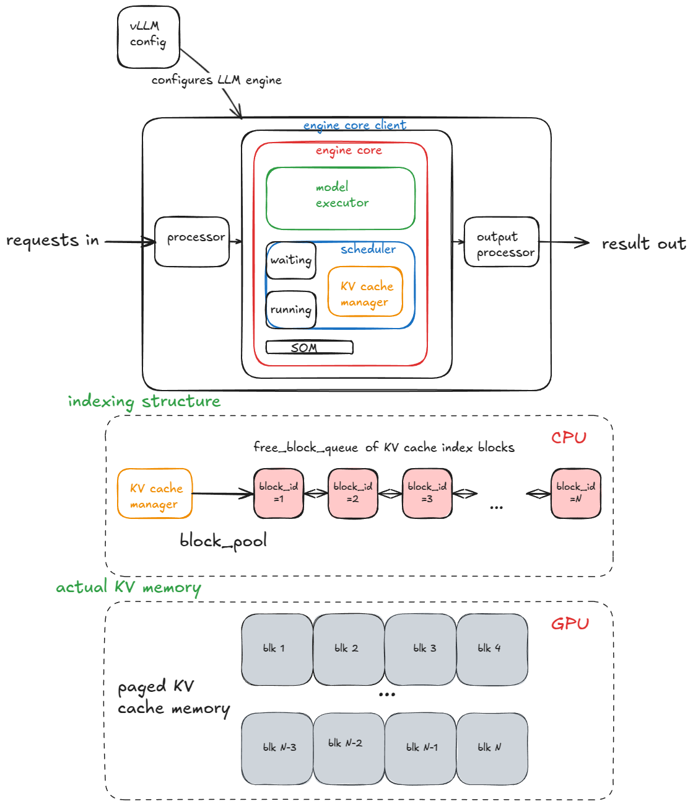
· 初始化设备：为worker分配一个CUDA设备（如 "cuda:0"），并检查模型dtype是否受支持（如bf16）。根据请求的gpu_memory_utilization（如0.8 → 总VRAM的80%）验证是否有足够的VRAM。设置分布式配置（DP / TP / PP / EP等）。实例化model_runner（持有sampler、KV cache以及前向传播缓冲区，如input_ids、positions等）。实例化InputBatch对象（持有CPU端前向传播缓冲区、用于KV-cache索引的块表、采样元数据等）。
· 加载模型：实例化模型架构。加载模型权重。调用model.eval()（PyTorch的推理模式）。可选：对模型调用torch.compile()。
· 初始化KV cache：获取每层KV-cache规格。历史上这始终是FullAttentionSpec（同质Transformer），但随着混合模型（滑动窗口、类似Jamba的Transformer/SSM）的出现，这变得更加复杂（参见Jenga [5]）。运行一次虚拟/性能分析前向传播，并获取GPU内存快照，以计算可用VRAM中能容纳多少KV cache块。分配、重塑并将KV cache张量绑定到注意力层。准备注意力元数据（如将后端设置为FlashAttention），供内核在前向传播期间后续使用。除非提供了 --enforce-eager，否则对每个预热批大小执行一次虚拟运行并捕获CUDA graphs。CUDA graphs将整个GPU工作序列记录到DAG中。后续在前向传播期间，我们启动/重放预烘焙的graphs，削减内核启动开销，从而改善延迟。
我在此抽象了许多底层细节：但这些是我现在要介绍的核心部分，因为后续章节会反复引用它们。
第一步是验证请求并将其送入引擎。对于每个提示词，我们：
· 创建唯一请求ID并记录其到达时间
· 调用输入预处理器，对提示词进行分词，并返回包含prompt、prompt_token_ids和type（text、tokens、embeds等）的字典
· 将这些信息打包到EngineCoreRequest中，添加优先级、采样参数及其他元数据
· 将请求传入引擎核心，引擎将其封装为Request对象并设置状态为WAITING 。随后，该请求被添加到调度器的等待队列中（若为FCFS则追加，若为优先级则堆插入）
此时引擎已接收输入，执行即可开始。在同步引擎示例中，这些初始提示是仅需处理的输入：没有机制在运行中途注入新请求。相比之下，异步引擎支持此功能（即连续批处理 [6]）：每一步后，新旧请求均会被考虑。
接下来，只要有待处理请求，引擎就会反复调用其step() 函数。每一步包含三个阶段：
· 调度：选择本步中运行的请求（解码，和/或（分块）预填充）
· 前向传播：运行模型并采样令牌
· 后处理：将采样到的令牌ID追加至每个Request ，进行去令牌化，并检查停止条件。若请求完成，则进行清理（例如，将其KV缓存块返回至free_block_queue ）并提前返回输出
· 请求超过其长度限制（ max_model_length或其自身的max_tokens ）
· 采样得到的token是EOS ID（除非启用了ignore_eos：在需要强制生成特定数量输出token的基准测试中很有用）
· 采样得到的token与采样参数中指定的任一stop_token_ids匹配
· 输出中出现停止字符串：我们将输出截断至第一个停止字符串出现的位置，并在引擎中中止请求（注意，stop_token_ids会出现在输出中，但停止字符串不会）。
接下来，我们将更详细地探讨调度机制。
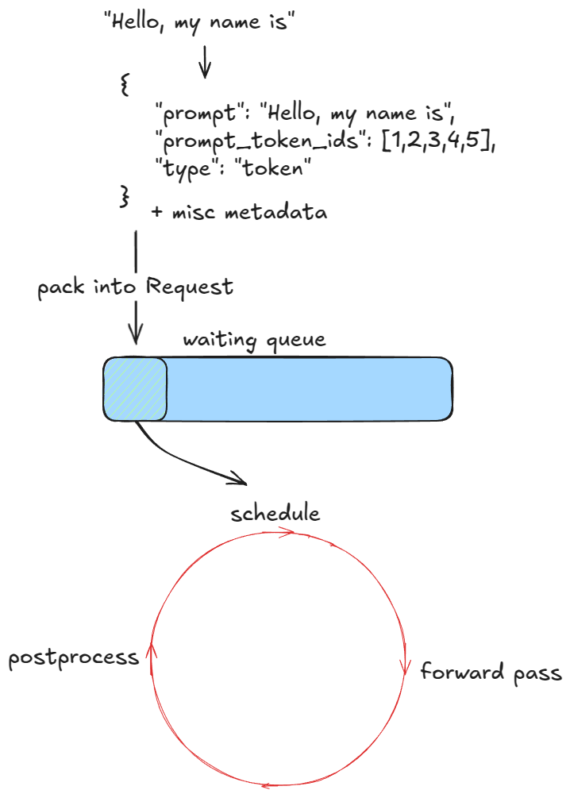
推理引擎处理两种主要类型的工作负载：
· 预填充请求：对所有提示词token进行前向传播。这类请求通常受计算限制（阈值取决于硬件和提示词长度）。结束时，我们从最终token位置的概率分布中采样单个token。
· 解码请求：仅对最近一个token进行前向传播。所有较早的KV向量均已缓存。这类请求受内存带宽限制，因为仅计算一个token仍需加载全部LLM权重（及KV缓存）。
V1调度器通过更智能的设计选择，能在同一阶段混合处理两种类型的请求。相比之下，V0引擎一次只能处理预填充或解码中的一种。
· 计算要生成的新令牌数量（由于推测解码和异步调度，不总是1，稍后会详述）。
· 调用KV缓存管理器的allocate_slots函数（详见下文）。
· 通过减去步骤1中的令牌数来更新令牌预算。
· 检索已计算块的数量（若禁用前缀缓存则返回0，稍后介绍）。
· 调用KV缓存管理器的allocate_slots函数。
· 将请求从等待队列中弹出并移至运行队列，将其状态设置为RUNNING。
· 更新令牌预算。
· 计算块数：确定需要分配多少个新的KV缓存块（n）。每个块默认存储16个令牌。例如，如果一个预填充请求有17个新令牌，我们需要ceil(17/16) = 2个块。
· 检查可用性：如果管理器的池中没有足够的块，则提前退出。根据是解码还是预填充请求，引擎可能会尝试通过驱逐低优先级请求（调用kv_cache_manager.free，将KV块返回到块池）来执行重计算抢占（V0中支持交换抢占），或者可能跳过调度并继续执行。
· 分配块：通过KV缓存管理器的协调器，从块池（前面提到的free_block_queue双向链表）中获取前n个块。存储到req_to_blocks，这是一个将每个请求ID映射到其KV缓存块列表的字典。
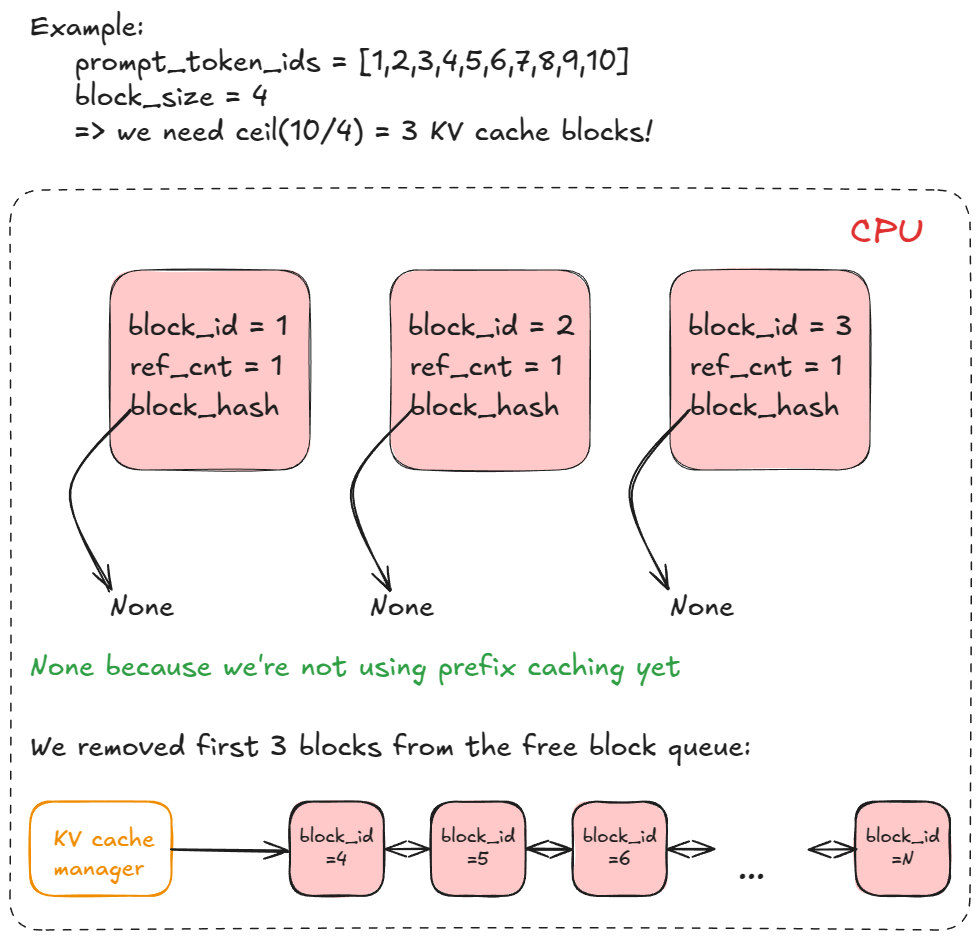
我们调用模型执行器的execute_model，它委托给Worker，Worker再委托给模型运行器。
主要步骤如下：
· 更新状态：从input_batch中修剪已完成的请求；更新与前向传播相关的杂项元数据（例如，每个请求的KV缓存块，将用于索引分页KV缓存内存）。
· 准备输入：将缓冲区从CPU复制到GPU；计算位置；构建slot_mapping（在示例中详细说明）；构造注意力元数据。
· 前向传播：使用自定义分页注意力内核运行模型。所有序列被展平并拼接成一个长的“超级序列”。位置索引和注意力掩码确保每个序列仅关注自身的令牌，从而实现无需右填充的连续批处理。
· 收集最后令牌状态：提取每个序列最终位置的隐藏状态并计算logits。
· 采样：根据采样配置（如贪婪、温度、top-p、top-k等）从计算出的logits中采样令牌。
前向传播步骤本身有两种执行模式：
· 急切模式：当启用急切执行时，运行标准的PyTorch前向传播。
· “捕获”模式：当未强制急切执行时，执行/重放预先捕获的CUDA图（请记住，在引擎构建期间的初始化KV缓存过程中我们捕获了这些图）。
以下是一个具体示例，有助于清晰理解连续批处理和分页注意力：
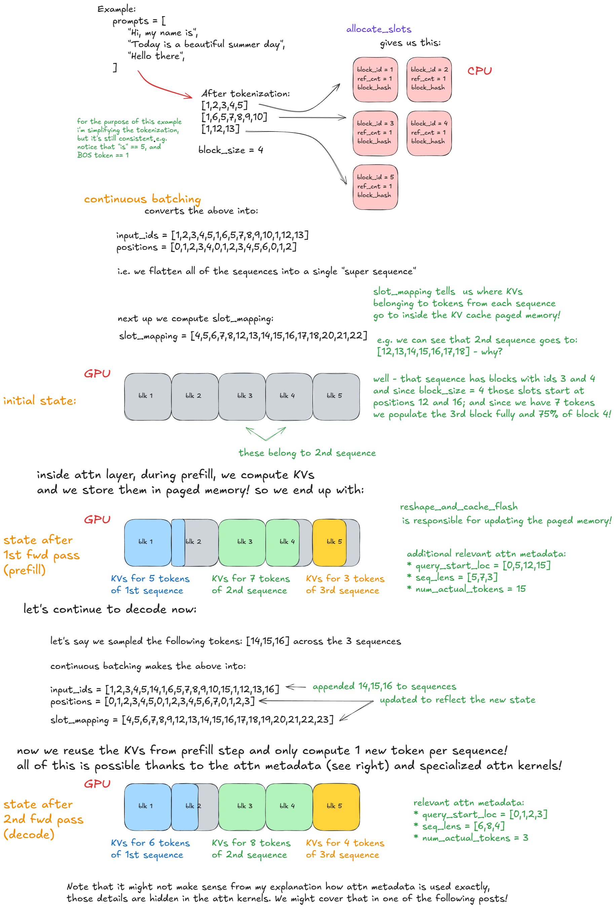
基础引擎流程就绪后，我们现在可以探讨高级特性。
我们已经讨论了抢占、分页注意力（paged attention）和连续批处理（continuous batching）。
接下来，我们将深入探讨：
· 分块预填充（Chunked prefill）
· 前缀缓存（Prefix caching）
· 引导式解码（通过语法约束的有限状态机）
· 推测解码（Speculative decoding）
· 分离式P/D（预填充/解码）
分块预填充是一种通过将长提示的预填充步骤拆分为更小的块来处理长提示的技术。没有它，我们可能会遇到单个非常长的请求独占一个引擎步骤，从而阻止其他预填充请求运行的情况。这将推迟所有其他请求并增加它们的延迟。
例如，让每个块包含n（=8）个令牌，用小写字母和“-”分隔标记。一个长提示P可能看起来像x-y-z，其中z是一个不完整的块（例如2个令牌）。执行P的完整预填充将需要 ≥ 3个引擎步骤（如果它未在其中一个步骤中被调度执行，则可能更多），并且只有在最后一个分块预填充步骤中，我们才会采样一个新令牌。
以下是同一示例的可视化表示：
实现很简单：限制每个步骤的新令牌数量。如果请求的数量超过long_prefill_token_threshold，则将其重置为该值。底层的索引逻辑（前面已描述）会处理其余部分。
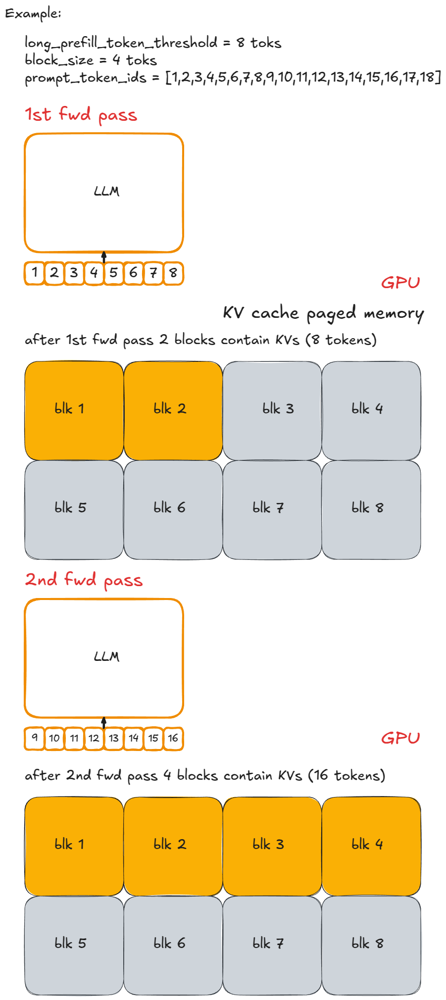
在vLLM V1中，通过将long_prefill_token_threshold设置为正整数来启用分块预填充。（从技术上讲，即使不设置，如果提示长度超过令牌预算，我们也会截断它并运行分块预填充。）
为了解释前缀缓存的工作原理，让我们对原始代码示例进行一些调整：
from vllm import LLM, SamplingParams
long_prefix = "<a piece of text that is encoded into more than block_size tokens>"
prompts = [
"Hello, my name is",
"The president of the United States is",
]
sampling_params = SamplingParams(temperature=0.8, top_p=0.95)
def main():
llm = LLM(model="TinyLlama/TinyLlama-1.1B-Chat-v1.0")
outputs = llm.generate(long_prefix + prompts[0], sampling_params)
outputs = llm.generate(long_prefix + prompts[1], sampling_params)
if __name__ == "__main__":
main()前缀缓存避免了多个提示词在开头共享的令牌被重复计算：因此得名“前缀”。
关键部分是 `long_prefix`：它被定义为任何长于KV缓存块（默认16个令牌）的前缀。为简化示例，假设 `long_prefix` 的长度恰好为n x block_size（其中n ≥ 1）。
没有前缀缓存时，每次处理带有相同 `long_prefix` 的新请求，我们都需要重新计算所有n x block_size个令牌。
启用前缀缓存后，这些令牌只需计算一次（其KV存储在KV缓存分页内存中），然后被复用，因此只需处理新的提示词令牌。这加速了预填充请求（尽管对解码阶段无帮助）。
这在vLLM中是如何实现的？
在第一次generate调用期间，调度阶段中，在 `kv_cache_manager.get_computed_blocks` 内部，引擎调用了 `hash_request_tokens`：
· 该函数将 `long_prefix` + prompts[0] 分割成16个令牌的块。
· 对于每个完整的块，它计算一个哈希（使用内置哈希或SHA-256，后者较慢但冲突更少）。哈希结合了前一个块的哈希、当前令牌以及可选的元数据。
· 每个结果存储为BlockHash对象，包含哈希及其token ID。我们返回一个block hash列表。
该列表存储在self.req_to_block_hashes[request_id] 中。
接下来，引擎调用find_longest_cache_hit检查这些哈希中是否有任何已存在于cached_block_hash_to_block中。在首次请求时，未找到任何命中。
然后我们调用allocate_slots，它会调用coordinator.cache_blocks，将新的BlockHash条目与分配的KV块关联，并将其记录在cached_block_hash_to_block中。
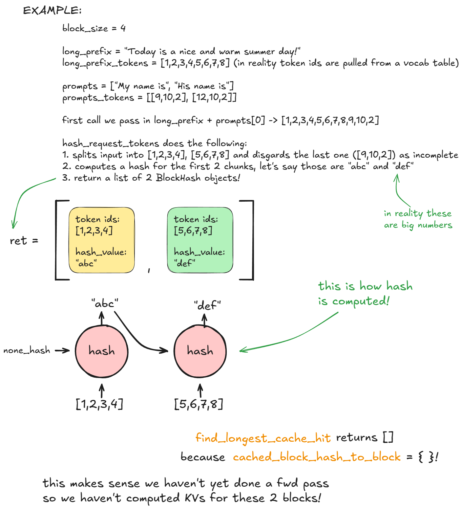
之后，前向传播将填充与上述分配的KV缓存块对应的分页KV缓存内存中的KV。
在第二次使用相同前缀的generate调用中，步骤1-3重复执行，但现在find_longest_cache_hit通过线性搜索找到所有n个块的匹配项。引擎可以直接重用这些KV块。
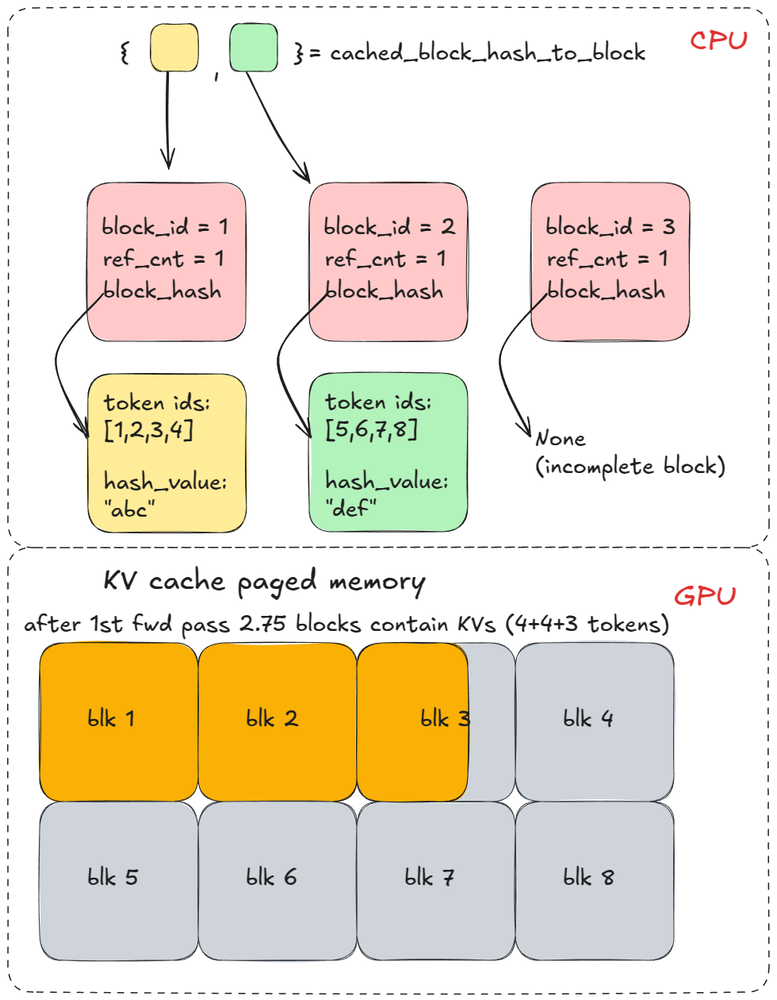
如果原始请求仍然存活，这些块的引用计数将增加（例如增加到2）。在此示例中，第一个请求已完成，因此这些块被释放回池中，其引用计数重置为0。由于我们能够从cached_block_hash_to_block中检索到它们，我们知道它们是有效的（KV缓存管理器的逻辑如此设计），因此我们再次将它们从free_block_queue中移除。
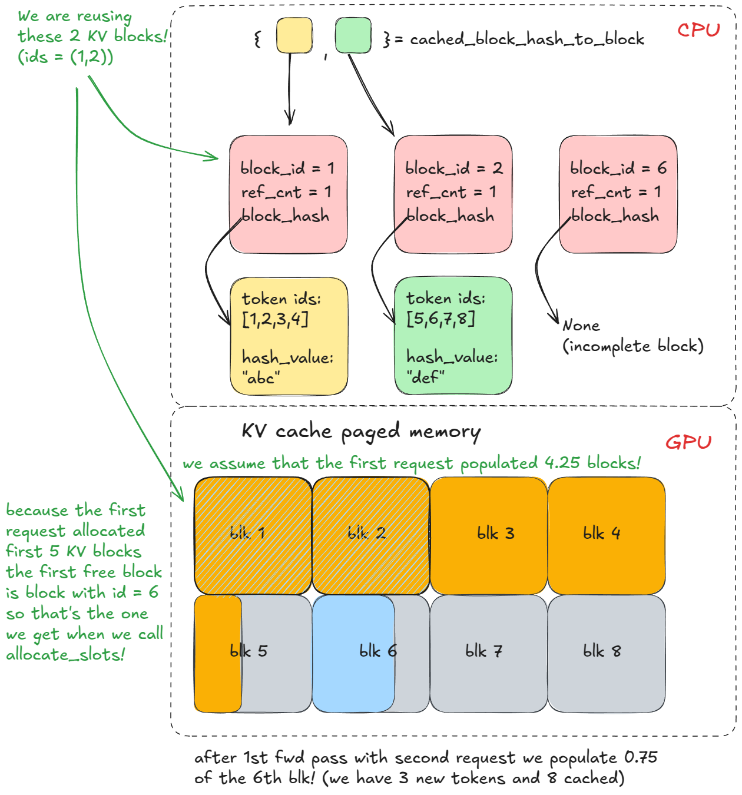
这就是前缀缓存的核心：不要重新计算已见过的前缀：直接重用它们的KV缓存！
前缀缓存默认启用。若要禁用：设置enable_prefix_caching = False 。
引导解码是一种技术，在每个解码步骤中，logits受基于语法的有限状态机约束。这确保了只有语法允许的token才能被采样。
这是一个强大的设置：你可以强制从正则文法（乔姆斯基类型-3，例如任意正则表达式模式）一直到上下文无关文法（类型-2，覆盖大多数编程语言）的任何内容。
为了更具体地说明，让我们从最简单的示例开始，基于之前的代码：
from vllm import LLM, SamplingParams
from vllm.sampling_params import GuidedDecodingParams
prompts = [
"This sucks",
"The weather is beautiful",
]
guided_decoding_params = GuidedDecodingParams(choice=["Positive", "Negative"])
sampling_params = SamplingParams(guided_decoding=guided_decoding_params)
def main():
llm = LLM(model="TinyLlama/TinyLlama-1.1B-Chat-v1.0")
outputs = llm.generate(prompts, sampling_params)
if __name__ == "__main__":
main()在我给出的玩具示例中（假设字符级分词）：在prefill阶段，FSM掩码logits，使得只有 "P" 或 "N" 是可行的。如果采样到 "P"，FSM移动到 "Positive" 分支；下一步只允许 "o"，依此类推。
在vLLM中的实现方式：
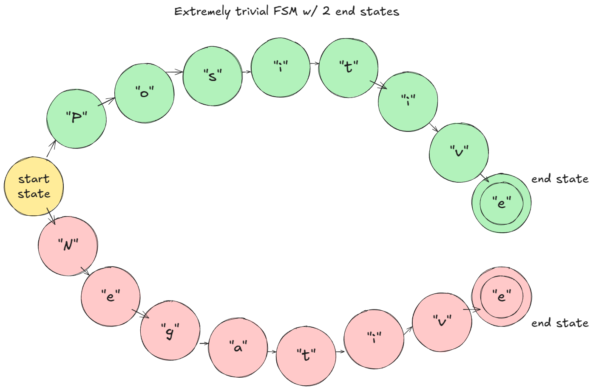
· 在LLM引擎构建时，会创建一个StructuredOutputManager；它可以访问tokenizer并维护一个 _grammar_bitmask张量。
· 添加请求时，其状态设为WAITING_FOR_FSM，grammar_init选择后端编译器（如xgrammar [7]；注意后端为第三方代码）。
· 该请求的语法异步编译。
· 调度期间，若异步编译完成，状态切换为WAITING，request_id加入structured_output_request_ids；否则放入skipped_waiting_requests，待下一引擎步骤重试。
· 调度循环结束后（仍在调度内），若有FSM请求，StructuredOutputManager请求后端准备/更新 _grammar_bitmask。
· 前向传播产生logits后，xgr_torch_compile的函数将位掩码扩展至词表大小（因使用32位整数，扩展比为32倍），并将不允许的logits掩码为 –∞。
· 采样下一token后，通过accept_tokens推进请求的FSM，即在FSM图上移至下一状态。
步骤6需进一步说明。
若vocab_size = 32，_grammar_bitmask为单个整数，其二进制表示编码允许（"1"）与不允许（"0"）的token。例如，"101…001" 扩展为长度32的数组 [1, 0, 1, …, 0, 0, 1]；位置为0的logits设为 –∞。对于更大词表，使用多个32位字并相应扩展/拼接。后端（如xgrammar）负责依据当前FSM状态生成这些位模式。
这里有一个更简单的例子，其中vocab_size = 8且使用8位整数（适合喜欢我图示的读者）：
您可以通过在vLLM中传入所需的guided_decoding配置来启用此功能。
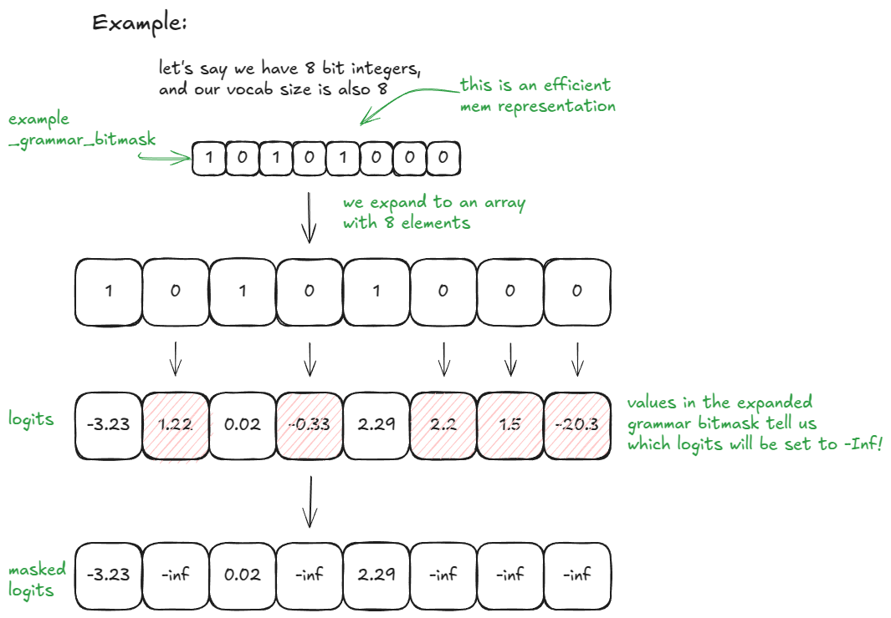
在自回归生成中，每个新token都需要大型语言模型进行一次前向传播。这代价高昂：每一步都需重新加载并应用所有模型权重，仅为了计算一个token！（假设batch size == 1，一般情况下为B）
推测解码 [8] 通过引入一个较小的草稿模型来加速此过程。草稿模型廉价地提出k个token。但我们最终并非要从这个小模型采样：它仅用于猜测候选续写。大型模型仍决定哪些是有效的。
步骤如下：
· 草稿：在当前上下文上运行小模型，提出k个token
· 验证：在上下文加上k个草稿token上运行一次大型模型。这会为这k个位置以及额外一个位置生成概率（因此我们得到k+1个候选）
· 接受/拒绝：从左到右遍历k个草稿令牌：如果大模型对草稿令牌的概率≥草稿模型的概率，则接受；否则，以概率p_large(token)/p_draft(token)接受。在第一次拒绝时停止，或接受所有k个草稿令牌。如果所有k个草稿令牌都被接受，则额外从大模型中“免费”采样第(k+1)个令牌（我们已计算该分布）。如果发生拒绝，在该位置创建新的重新平衡分布（p_large - p_draft，最小值截断为0，归一化使总和为1），并从中采样最后一个令牌。
为何有效：尽管我们使用小模型提出候选，接受/拒绝规则保证了在期望上序列的分布与直接逐令牌从大模型采样完全一致。这意味着投机解码在统计上等同于标准自回归解码：但可能更快，因为单次大模型前向传播可产出多达k+1个令牌。
vLLM V1不支持LLM草稿模型方法，而是实现了更快但精度较低的提案方案：n-gram、EAGLE [9] 和Medusa [10]。
各方案简述：
· n-gram：取最后prompt_lookup_max个令牌；在序列中查找先前匹配；若找到，则提出该匹配后跟随的k个令牌；否则减小窗口并重试至prompt_lookup_min。
· Eagle：对大语言模型进行“模型手术”：保留嵌入和LM头，用轻量级MLP替换Transformer堆栈；微调该MLP作为廉价草稿模型。
· Medusa：在大模型顶部（LM头之前的嵌入）训练辅助线性头，并行预测接下来的k个令牌；使用这些头提出令牌，比运行单独的小语言模型更高效。
from vllm import LLM, SamplingParams
prompts = [
"Hello, my name is",
"The president of the United States is",
]
sampling_params = SamplingParams(temperature=0.8, top_p=0.95)
speculative_config={
"method": "ngram",
"prompt_lookup_max": 5,
"prompt_lookup_min": 3,
"num_speculative_tokens": 3,
}
def main():
llm = LLM(model="TinyLlama/TinyLlama-1.1B-Chat-v1.0", speculative_config=speculative_config)
outputs = llm.generate(prompts, sampling_params)
if __name__ == "__main__":
main()这在vLLM中是如何实现的？
设置（引擎构建期间）：
· 初始化设备：创建草稿器（草稿模型，如NgramProposer）和rejection_sampler（部分用Triton编写）。
· 加载模型：加载草稿模型权重（n-gram无需操作）。
之后在generate函数中（假设收到全新请求）：
· 使用大模型执行常规prefill步骤。
· 前向传播和标准采样后，调用propose_draft_token_ids(k) 从草稿模型采样k个草稿token。
· 将这些存入request.spec_token_ids（更新请求元数据）。
· 在下一个引擎步骤中，当请求位于运行队列时，将len(request.spec_token_ids) 添加到“新token”计数中，以便allocate_slots为前向传播预留足够的KV块。
· 将spec_token_ids复制到input_batch.token_ids_cpu中，形成（上下文 + 草稿）令牌序列。
· 通过 _calc_spec_decode_metadata计算元数据（此过程会从input_batch.token_ids_cpu复制令牌、准备logits等），随后对草稿令牌执行大模型前向传播。
· 不使用常规的logits采样，而是采用rejection_sampler从左至右接受或拒绝，生成output_token_ids。
· 重复步骤2-7，直至满足停止条件。
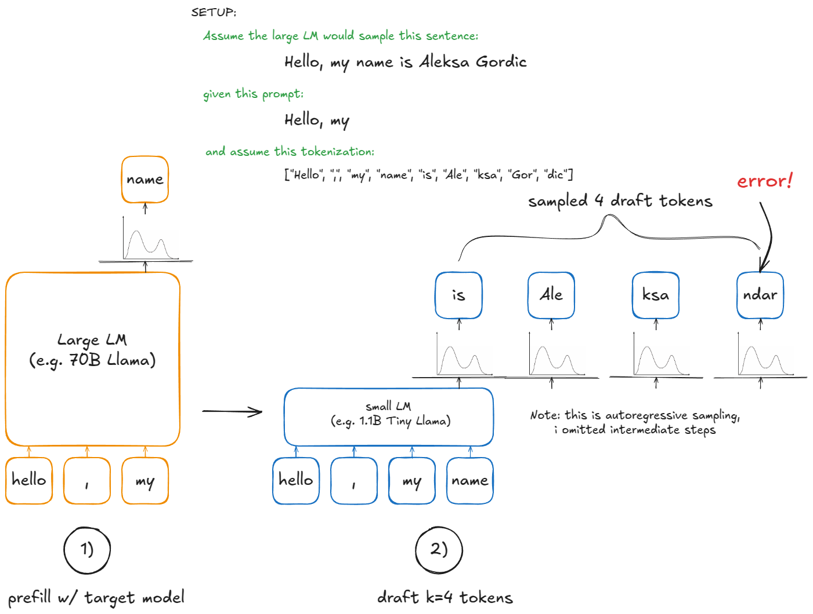
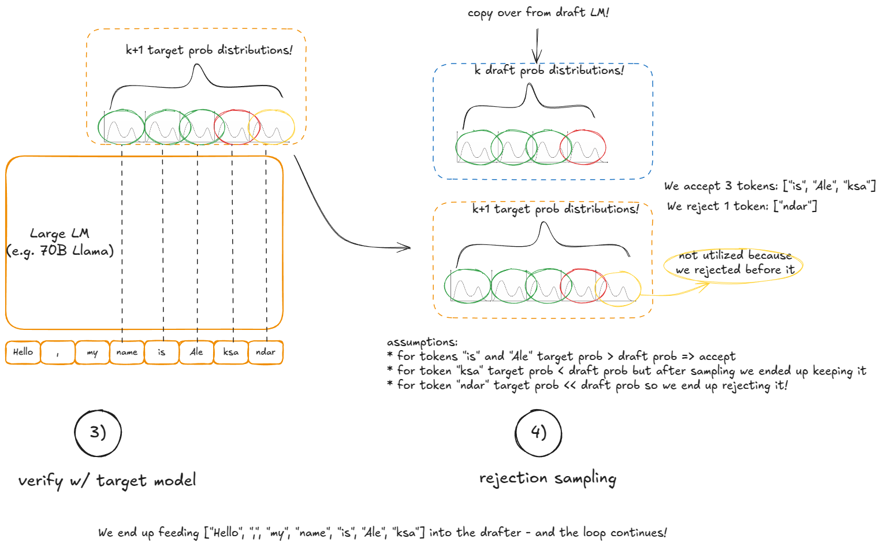
此前已暗示过分离式P/D（prefill/decode）的动机。
Prefill和decode的性能特征差异显著（前者受计算限制，后者受内存带宽限制），因此分离执行是合理的设计。这能更精细地控制延迟：包括TTFT（首令牌时间）和ITL（令牌间延迟）：基准测试部分将详细讨论。
实践中，我们运行N个vLLM prefill实例和M个vLLM decode实例，根据实时请求混合情况自动伸缩。Prefill工作节点将KV写入专用KV缓存服务；decode工作节点从中读取。这能将长时间、突发性的prefill与稳定、延迟敏感的decode隔离开来。
这在vLLM中是如何实现的？
为清晰起见，以下示例依赖SharedStorageConnector，这是一个用于演示机制的调试连接器实现。
我们启动2个vLLM实例（GPU 0用于prefill，GPU 1用于decode），然后在它们之间传输KV缓存：
import os
import time
from multiprocessing import Event, Process
import multiprocessing as mp
from vllm import LLM, SamplingParams
from vllm.config import KVTransferConfig
prompts = [
"Hello, my name is",
"The president of the United States is",
]
def run_prefill(prefill_done):
os.environ["CUDA_VISIBLE_DEVICES"] = "0"
sampling_params = SamplingParams(temperature=0, top_p=0.95, max_tokens=1)
ktc=KVTransferConfig(
kv_connector="SharedStorageConnector",
kv_role="kv_both",
kv_connector_extra_config={"shared_storage_path": "local_storage"},
)
llm = LLM(model="TinyLlama/TinyLlama-1.1B-Chat-v1.0", kv_transfer_config=ktc)
llm.generate(prompts, sampling_params)
prefill_done.set() # notify decode instance that KV cache is ready
# To keep the prefill node running in case the decode node is not done;
# otherwise, the script might exit prematurely, causing incomplete decoding.
try:
while True:
time.sleep(1)
except KeyboardInterrupt:
print("Script stopped by user.")
def run_decode(prefill_done):
os.environ["CUDA_VISIBLE_DEVICES"] = "1"
sampling_params = SamplingParams(temperature=0, top_p=0.95)
ktc=KVTransferConfig(
kv_connector="SharedStorageConnector",
kv_role="kv_both",
kv_connector_extra_config={"shared_storage_path": "local_storage"},
)
llm = LLM(model="TinyLlama/TinyLlama-1.1B-Chat-v1.0", kv_transfer_config=ktc)
prefill_done.wait() # block waiting for KV cache from prefill instance
# Internally it'll first fetch KV cache before starting the decoding loop
outputs = llm.generate(prompts, sampling_params)
if __name__ == "__main__":
prefill_done = Event()
prefill_process = Process(target=run_prefill, args=(prefill_done,))
decode_process = Process(target=run_decode, args=(prefill_done,))
prefill_process.start()
decode_process.start()
decode_process.join()
prefill_process.terminate()vLLM中的步骤如下：
· 实例化 ： 在引擎构建期间，连接器在两个位置创建：在worker的init device过程中（位于init worker distributed environment函数内），角色为 "worker"；在scheduler构造函数内，角色为 "scheduler"。
· 缓存查找 ： 当scheduler处理等待队列中的prefill请求时（在本地前缀缓存检查之后），调用连接器的get_num_new_matched_tokens。此方法检查KV缓存服务器中是否存在外部缓存的token。Prefill在此处始终看到0；decode可能命中缓存。结果在调用allocate_slots前添加到本地计数中。
· 状态更新 ： scheduler随后调用connector.update_state_after_alloc，记录有缓存的请求（对prefill为无操作）。
· 元数据构建 ： 在调度结束时，scheduler调用meta = connector.build_connector_meta：Prefill添加所有is_store=True的请求（用于上传KV）。Decode添加is_store=False的请求（用于获取KV）。
· 上下文管理器：在前向传播之前，引擎进入一个KV连接器上下文管理器：进入时，调用kv_connector.start_load_kv。对于解码，这会从外部服务器加载KV并将其注入分页内存。对于预填充，这是一个无操作。退出时，调用kv_connector.wait_for_save。对于预填充，这会阻塞直到KV上传到外部服务器。对于解码，这是一个无操作。
以下是一个视觉示例：
· 对于SharedStorageConnector，“外部服务器”仅指本地文件系统。
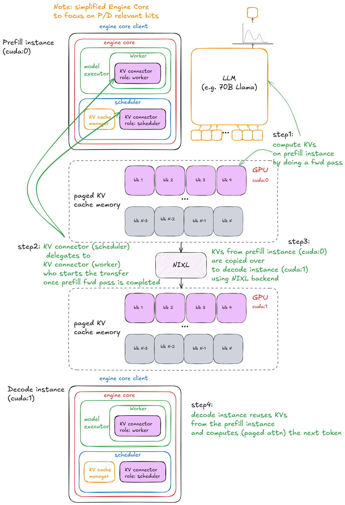
· 根据配置，KV传输也可以逐层进行（在每个注意力层之前/之后）。
· 解码仅在其请求的第一步加载外部KV；之后在本地计算/存储。
核心技巧就绪后，现在可以讨论扩展规模。
假设模型权重不再适合单个GPU的显存。
第一种选择是使用张量并行（如TP=8）将模型分片到同一节点上的多个GPU。如果模型仍然无法容纳，下一步是跨节点的流水线并行。
· 节点内带宽显著高于节点间，这就是为什么张量并行（TP）通常优于流水线并行（PP）。（同样，PP通信的数据量少于TP。）
· 由于我们专注于标准Transformer而非MoE，因此不涉及专家并行（EP），也不涉及序列并行，因为TP和PP在实践中最为常用。
在此阶段，我们需要多个GPU进程（工作进程）以及一个协调它们的编排层。这正是MultiProcExecutor所提供的。
在vLLM中的实现方式：
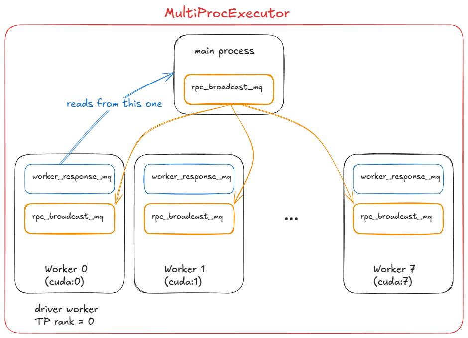
· MultiProcExecutor初始化一个rpc_broadcast_mq消息队列（底层通过共享内存实现）。
· 构造函数遍历world_size（例如TP=8 ⇒ world_size=8），并通过WorkerProc.make_worker_process为每个rank生成一个守护进程。
· 对于每个工作进程，父进程首先创建读写管道。
· 新进程运行WorkerProc.worker_main ，该函数实例化一个worker（与UniprocExecutor中一样，经历相同的“初始化设备”、“加载模型”等步骤）。
· 每个worker确定自己是driver（TP组中的rank 0）还是普通worker。每个worker设置两个队列：rpc_broadcast_mq（与父进程共享）用于接收工作，worker_response_mq用于发送响应。
· 初始化期间，每个子进程通过管道将其worker_response_mq句柄发送给父进程。当所有句柄都收到后，父进程解除阻塞：协调完成。
· 随后worker进入忙循环，阻塞在rpc_broadcast_mq.dequeue上。当工作项到达时，它们执行该工作项（与UniprocExecutor中一样，但现在包含TP/PP特定的分区工作）。结果通过worker_response_mq.enqueue发送回去。
· 运行时，当请求到达时，MultiProcExecutor将其入队到rpc_broadcast_mq（非阻塞）以广播给所有子worker。然后它等待指定输出rank的worker_response_mq.dequeue来收集最终结果。
从引擎的角度来看，一切都没有改变：所有多进程的复杂性都通过调用模型执行器的execute_model被抽象掉了。
· 在UniProcExecutor的情况下：execute_model直接导致调用worker上的execute_model
· 在MultiProcExecutor的情况下：execute_model通过rpc_broadcast_mq间接导致调用每个worker上的execute_model
此时，我们可以使用相同的引擎接口运行资源允许范围内尽可能大的模型。
下一步是横向扩展：启用数据并行（DP > 1），跨节点复制模型，添加轻量级DP协调层，在副本间引入负载均衡，并在前端放置一个或多个API服务器以处理传入流量。
搭建服务基础设施的方法有很多，但为了具体说明，这里举一个例子：假设我们有两个H100节点，希望在其上运行四个vLLM引擎。
如果模型需要TP=4，我们可以这样配置节点。
在第一个节点上，以无头模式（无API服务器）运行引擎，参数如下：
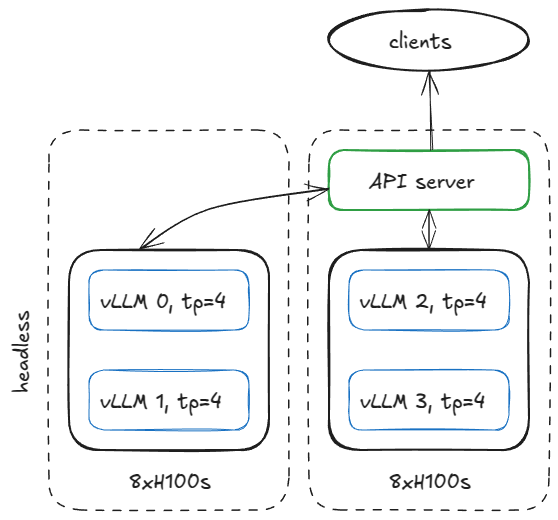
vllm serve <model-name>
--tensor-parallel-size 4
--data-parallel-size 4
--data-parallel-size-local 2
--data-parallel-start-rank 0
--data-parallel-address <master-ip>
--data-parallel-rpc-port 13345
--headless并在另一个节点上运行相同命令，稍作调整：
· 无 --headless
· 修改DP起始排名
vllm serve <model-name>
--tensor-parallel-size 4
--data-parallel-size 4
--data-parallel-size-local 2
--data-parallel-start-rank 2
--data-parallel-address <master-ip>
--data-parallel-rpc-port 13345这在VLLM中是如何工作的？
在无头节点上，CoreEngineProcManager启动2个进程（每个--data-parallel-size-local），每个进程运行EngineCoreProc.run_engine_core。这些函数中的每一个都会创建一个DPEngineCoreProc（引擎核心），然后进入其忙循环。
DPEngineCoreProc初始化其父级EngineCoreProc（EngineCore的子类），该父级：
· 创建一个input_queue和output_queue（queue.Queue）。
· 使用DEALER ZMQ套接字（异步消息库）与另一节点上的前端执行初始握手，并接收协调地址信息。
· 初始化DP组（例如，使用NCCL后端）。
· 使用MultiProcExecutor初始化EngineCore（如前所述，在4个GPU上设置TP=4）。
· 创建一个ready_event（threading.Event）。
· 启动一个输入守护线程（threading.Thread），运行process_input_sockets(…, ready_event)。同样地，启动一个输出线程。
· 仍在主线程中，等待ready_event，直到所有4个进程（跨越2个节点）中的输入线程完成协调握手，最终执行ready_event.set()。
· 一旦解除阻塞，向前端发送带有元数据（例如，paged KV cache内存中可用的num_gpu_blocks）的“ready”消息。
· 主线程、输入线程和输出线程随后进入各自的忙循环。
简而言之：最终得到4个子进程（每个DP副本一个），每个进程运行一个主线程、一个输入线程和一个输出线程。它们与DP协调器和前端完成协调握手，然后每个进程的三个线程在稳态忙循环中运行。
当前稳态：
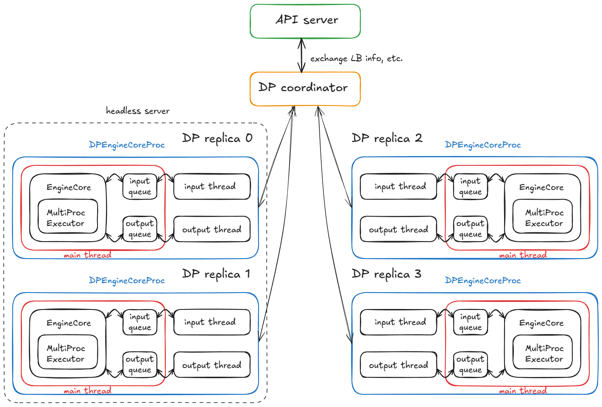
· 输入线程 ： 阻塞在输入套接字上，直到API服务器路由请求到来；收到请求后，解码负载，通过input_queue.put_nowait(...)将工作项入队，然后返回阻塞状态等待套接字。
· 主线程 ： 通过input_queue.get(...)唤醒，将请求送入引擎；MultiProcExecutor执行前向传播并将结果入队到output_queue。
· 输出线程 ： 通过output_queue.get(...)唤醒，将结果发送回API服务器，然后恢复阻塞状态。
其他机制：
· DP波次计数器 ： 系统跟踪“波次”；当所有引擎空闲时进入静默状态，新工作到达时计数器递增（用于协调/指标）。
· 控制消息 ： API服务器不仅发送推理请求，还可发送其他消息（如中止、工具/控制RPC）。
· 同步虚拟步骤 ： 如果任一DP副本有工作，所有副本执行前向步骤；无请求的副本执行虚拟步骤以参与必要的同步点（避免阻塞活跃副本）。
我们实例化一个AsyncLLM对象（围绕LLM引擎的asyncio包装器）。内部会创建一个DPLBAsyncMPClient（数据并行、负载均衡、异步、多进程客户端）。
在MPClient的父类中，launch_core_engines函数运行并执行以下操作：
· 创建用于启动握手的ZMQ地址（如无头节点所示）。
· 生成一个DPCoordinator进程。
· 创建一个CoreEngineProcManager（与无头节点相同）。
在AsyncMPClient（MPClient的子类）内部，我们执行以下操作：
· 创建一个outputs_queue（asyncio.Queue）。
· 我们创建一个asyncio任务process_outputs_socket，它通过输出套接字与所有4个DPEngineCoreProc的输出线程通信，并将数据写入outputs_queue。
· 随后，AsyncLLM中的另一个asyncio任务output_handler从该队列读取数据，并最终将信息发送至create_completion函数。
在DPAsyncMPClient内部，我们创建了一个asyncio任务run_engine_stats_update_task，用于与DP协调器通信。
DP协调器在前端（API服务器）和后端（引擎核心）之间进行中介。其功能包括：
· 定期向前端的run_engine_stats_update_task发送负载均衡信息（队列大小、等待/运行中的请求）。
· 通过动态调整引擎数量来处理来自前端的SCALE_ELASTIC_EP命令（仅适用于Ray后端）。
· 向后端发送START_DP_WAVE事件（由前端触发时），并回报波状态更新。
回顾一下，前端（AsyncLLM）运行多个asyncio任务（注意：并发而非并行）：
· 一类任务通过生成路径处理输入请求（每个新客户端请求都会生成一个新的asyncio任务）。
· 两个任务（process_outputs_socket、output_handler）处理来自底层引擎的输出消息。
· 一个任务（run_engine_stats_update_task）维持与DP协调器的通信：发送波次触发、轮询LB状态，并处理动态扩缩容请求。
最后，主服务器进程创建FastAPI应用，并挂载如OpenAIServingCompletion和OpenAIServingChat等端点，这些端点暴露/completion、/chat/completion等接口。随后通过Uvicorn提供整个技术栈服务。
综合以上，完整的请求生命周期如下！
从终端发送：
curl -X POST http://localhost:8000/v1/completions -H "Content-Type: application/json" -d '{
"model": "TinyLlama/TinyLlama-1.1B-Chat-v1.0",
"prompt": "The capital of France is",
"max_tokens": 50,
"temperature": 0.7
}'接下来发生的过程：
· 请求到达API服务器上OpenAIServingCompletion的create_completion路由。
· 该函数异步对提示词进行分词，并准备元数据（请求ID、采样参数、时间戳等）。
· 随后调用AsyncLLM.generate ，其流程与同步引擎一致，最终调用DPAsyncMPClient.add_request_async 。
· 此方法进而调用get_core_engine_for_request ，该函数根据DP协调器的状态在各引擎间进行负载均衡（选择得分最小/负载最低的引擎：score = len(waiting) * 4 + len(running) ）。
· ADD请求被发送至所选引擎的input_socket 。
· 在该引擎中：输入线程：解除阻塞，从输入套接字解码数据，并将工作项放入input_queue供主线程处理。主线程：在input_queue上解除阻塞，将请求添加到引擎，并反复调用engine_core.step() ，将中间结果入队至output_queue ，直至满足停止条件。提醒：step() 调用调度器、模型执行器（其本身可能是MultiProcExecutor ！）等。我们已见过此过程！输出线程：在output_queue上解除阻塞，并通过输出套接字发送结果。
· 这些结果触发AsyncLLM输出的asyncio任务（ process_outputs_socket和output_handler ），将令牌传播回FastAPI的create_completion路由。
· FastAPI附加元数据（结束原因、logprobs、使用信息等），并通过Uvicorn返回JSONResponse至您的终端！
就这样，您的补全结果返回了：整个分布式机制隐藏在一个简单的curl命令背后！太有趣了！！！
· 添加更多API服务器时，负载均衡在操作系统/套接字层面处理。从应用角度看，无显著变化：复杂性被隐藏。
· 使用Ray作为DP后端，您可以暴露一个URL端点（ /scale_elastic_ep ），用于自动扩展或缩减引擎副本的数量。
到目前为止，我们一直在分析“气体粒子”：即请求在引擎/系统中流动的内部机制。现在，让我们拉远视角，从整体上审视系统，并提出问题：如何衡量推理系统的性能？
在最高层面上，有两个相互竞争的指标：
· 延迟：从请求提交到返回token的时间
· 吞吐：系统每秒能生成/处理的token/请求数量
延迟对于交互式应用最为关键，因为用户需要等待响应。
吞吐在离线工作负载中更为重要，例如用于预训练/后训练运行、数据清洗/处理的合成数据生成，以及任何类型的离线批量推理任务。
在解释延迟与吞吐为何相互竞争之前，先定义几个常见的推理指标：
以下是一个简化模型，用以说明这两个指标的竞争本质。
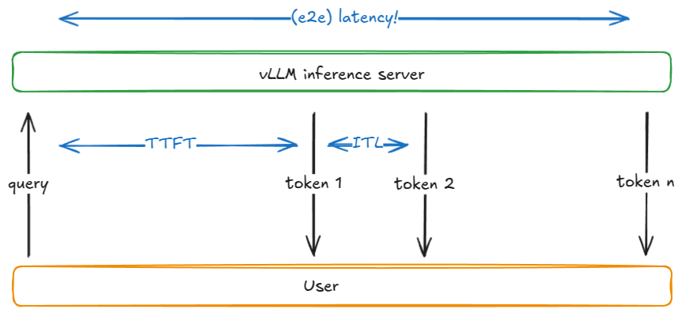
当观察批大小B如何影响单次解码步骤时，这种权衡变得清晰。随着B ↓ 趋向1，ITL下降：每步工作量减少，token不再与其他token “竞争”。随着B ↑ 趋向无穷，ITL上升，因为每步执行更多FLOPs：但吞吐提升（直至达到峰值性能），因为权重I/O在更多token间分摊。
Roofline模型有助于理解：在饱和批大小B_sat以下，步骤时间由HBM带宽主导（逐层将权重流式传输至片上内存），因此步骤延迟近乎恒定：计算1个与10个token可能耗时相近。超过B_sat后，内核转为计算受限，步骤时间大致随B增长；每增加一个token都会推高ITL。
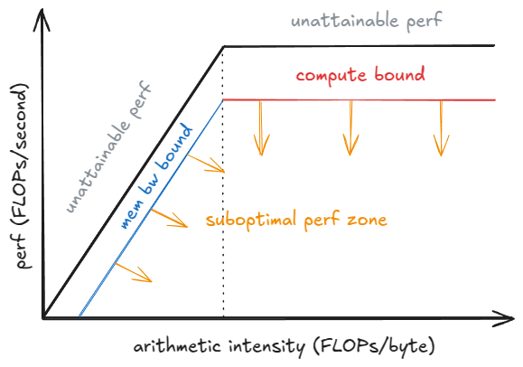
| 指标（原文） | 定义（中文） |
|---|---|
| TTFT（首个token时间） | 从请求提交到收到第一个输出token的耗时 |
| ITL（token间耗时） | 相邻两个token之间的耗时（如从token i-1到i） |
| TPOT（每输出token耗时） | 一个请求内所有输出token的平均ITL |
| E2E/延迟（端到端） | 处理完一个请求的总耗时，即TTFT + 各ITL之和（提交到收到末token） |
| 吞吐量 | 系统每秒处理的token数（或请求数），输入/输出/两者皆可 |
| 有效吞吐(Goodput) | 在满足SLO（如TTFT/TPOT/e2e上限）前提下的有效吞吐：只统计达标的请求 |
vLLM提供vllm bench { serve,latency,throughput } CLI，封装了vllm / benchmarks / { server,latency,throughput } .py。
这些脚本的功能如下：
· latency ： 使用短输入（默认32个token），以小批量（默认8）采样128个输出token。运行多次迭代，并报告该批次的端到端延迟。
· throughput ： 一次性提交一组固定的提示（默认：1000个ShareGPT样本），即QPS=Inf模式，并报告整个运行过程中的输入/输出/总token数及每秒请求数。
· serve ： 启动vLLM服务器，通过从泊松（或更一般地，伽马）分布中采样请求到达间隔来模拟真实工作负载。它在时间窗口内发送请求，测量我们讨论过的所有指标，并可选择通过信号量强制服务器端最大并发（例如，将服务器限制为64个并发请求）。
vllm bench latency
--model <model-name>
--input-tokens 32
--output-tokens 128
--batch-size 8还有一个自动调优脚本，驱动serve基准测试以找到满足目标SLO的参数设置（例如，“在保持p99端到端延迟< 500 ms 的同时最大化吞吐”），并返回建议的配置。
参考：https://www.aleksagordic.com/blog/vllm